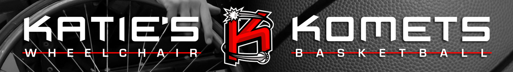

About Our Program
We are a Co-ed Wheelchair Basketball Team for children ages elementary throught highschool. The program does not require that a child be a full-time wheelchair user or even own a wheelchair. The team is a member of the National Wheelchair Basketball Association. We practice at the Carousel House in Philadelphia's Fairmount Park once a week on Saturdays. Our games are at travel locations. Katie's Komets has traveled Virginia, New Jersey, New York, Maryland, Alabama, and more. Katie's Komets has also traveled to nationals in Louisville, Kentucky and in April 2014 placed 22nd in the nation and in 2015 Katie's Komets placed 5th in the national NIT division. Katie's Komets also hosts a regional tournament in Philadelphia every January with numerous teams attending from as far away as Florida and Indiana.
Meet our coaches

Head Coach(Varsity/JV) - Keith Newerla
Head Coach(Prep) - Paul Dauphin Favorite part of Katie's Komets: Watching all the inspirational players grow and succeed.
Assistant Coach - Chris Kile Coaching experience: Edinboro University Summer camp (2001-05), AAU Quakertown Quakers (06-07), Ryan Martin summer camp (2013), Katie's Komets (2013-present) NWBA teams played for: 7 He currently plays for the New York Rollin' Knicks. Education: BA Edinboro University
Assistant Coach - Shawn Devault Shawn started playing wheelchair basketball at age 10, with Katie's Komets. After 8 years with the Komets, Shawn continued on to the University of Wisconsin-Whitewater. There, Shawn played 5 years, while earning a Bachelor's Degree specializing in Adaptive Recreation. Shawn had the privilege of being part of two Collegiate National Championship teams while at UWW.When Shawn isn't coaching, Shawn works in Special Education and adaptive summer camp settings, working with kids with disabilities ages 4-21. In free time, Shawn enjoys being active in church and following professional sports, specifically the Boston Red Sox.
Assistant Coach - Sean Darab Sean Darab was born and raised in Philadelphia. He graduated from high school in 1997. He went to Abilitech, a computer-oriented business school, for about two years, and then in May, 2000 secured an administrative assistant position at Pep Boys Headquarters, where he is still employed. He started playing basketball at the age of 16 on the inaugural basketball team at Carousel House (Rollin’ Thunder). He played for four years before becoming an assistant coach (for the past 14 years). Sean also participated in a wheelchair racing in program at Carousel House.